Danmark
哥本哈根
Copenhagen把自行車當作主流交通，而不是道路的附加選項。
- 自行車有車道就走車道；人行道下車牽行
- 滑板車依自行車規則；市中心供應受限
- 代表租借Donkey Republic、Voi 電輔車／Lime 滑板車
Bike-first
Nordic Four Countries2026
以丹麥、瑞典、挪威與芬蘭為範圍，聚焦哥本哈根、斯德哥爾摩、奧斯陸與赫爾辛基四大都市，看它們怎麼分配自行車與電動滑板車路權、管理停車，也讓旅人輕鬆借車。
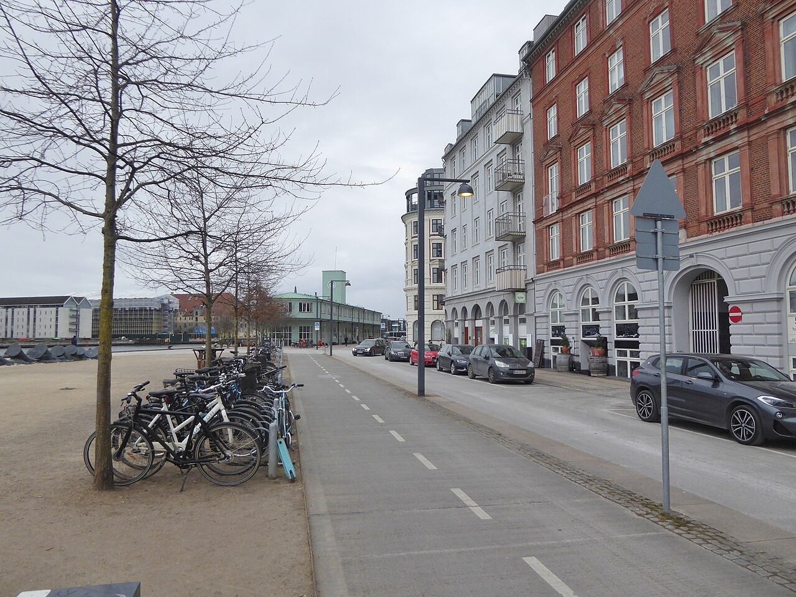
先讀懂差異
01 / City Profiles
一國一城，同樣重視低碳移動，四大都市選擇的治理工具卻不相同。
Danmark
把自行車當作主流交通，而不是道路的附加選項。
Bike-first
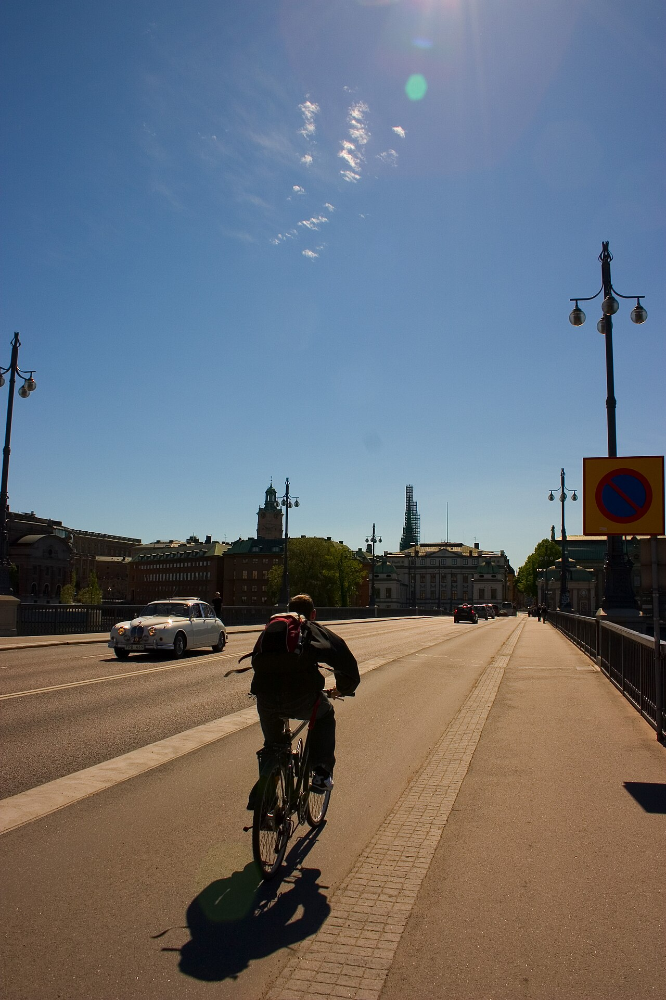
Sverige
路權比照自行車，治理重點放在停放秩序與街道可及性。
Order-first
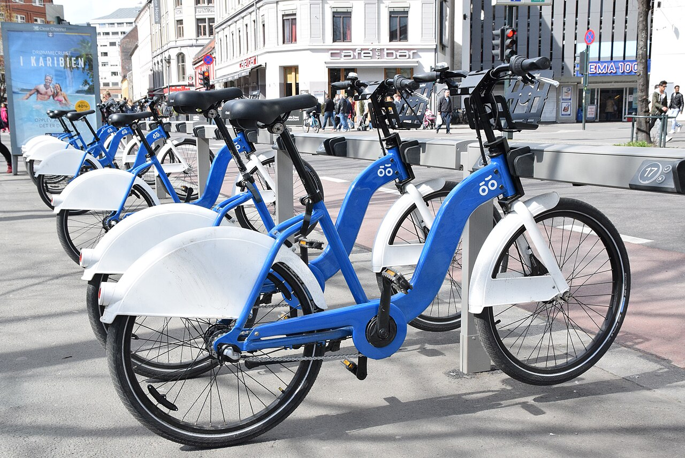
Norge
規則保留彈性，但「禮讓行人」是進入人行空間的前提。
Flexible
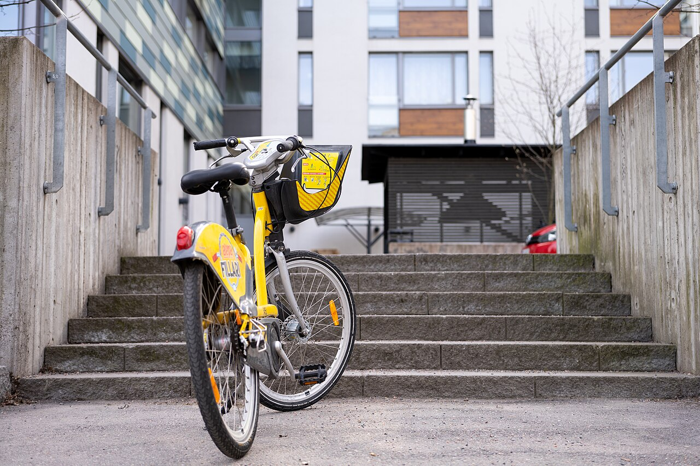
Suomi
以明確路權搭配 GPS 管制，把共享運具納入城市系統。
System-first
02 / Right of Way
比較的是一般規則；現場標誌、分流與臨時管制永遠優先。
| 城市 | 運具 | 自行車道 | 一般車道 | 人行道 | 行穿線 | 關鍵提醒 |
|---|---|---|---|---|---|---|
| CPH哥本哈根 | 自行車 | ✓ | △ | — | — | 左轉採兩段式；注意公車站行人 |
| 電動滑板車 | ✓ | △ | — | — | 原則依自行車規則 | |
| STO斯德哥爾摩 | 自行車 | ✓ | △ | — | △ | 騎越時依車輛讓路規則；依標線與號誌行駛 |
| 電動滑板車 | ✓ | △ | — | △ | 合規車型視同自行車；不可騎人行道 | |
| OSL奧斯陸 | 自行車 | ✓ | ✓ | △ | △ | 人行空間須不妨礙、危及行人 |
| 電動滑板車 | ✓ | ✓ | △ | △ | 人多時下車牽行；騎越時不具行人優先權 | |
| HEL赫爾辛基 | 自行車 | ✓ | △ | — | △ | 無自行車設施時走道路右側 |
| 電動滑板車 | ✓ | △ | — | △ | 依法比照自行車；15 歲以上 |
註：表中的「行穿線」指以騎乘方式穿越；△ 代表可在符合標誌與讓路規則時騎越，但不等於具有行人優先權。下車牽行時視同行人。
03 / Shared Mobility
點選城市，快速查看旅人真正需要知道的取還方式與限制。
01 — Copenhagen
App + 指定停車點Bike
兩者皆可用 App 找車與解鎖。Voi 可直接掃描車把上的 QR Code，依畫面綁定信用卡後開始租車；Donkey 則提供一般與電輔車。
Scooter
2025–2027 市府合作業者。密集市區設有供應禁區，車輛須停在約 400 處指定區。
旅人提示住宿點借單車通常最省事；滑板車不適合當作老城區內隨停隨走的首選。
02 — Stockholm
App 租車 + 指定停放Bike
Voi 與 Bolt 各獲准投放 1,500 輛共享單車；也可向 Gamla Stans Cykel、Cykelstallet 等店家按時或按日租借。
Scooter
全市總量上限 12,000 輛，約有 700 個停車格；老城與多處廣場、碼頭另有禁停區。
旅人提示結束滑板車行程前，先在 App 找到允許停放的位置，避免在老城才發現無法還車。
03 — Oslo
成熟站點 + 多平台整合Bike
約 3,000 輛一般與電輔車、約 260 站；App 解鎖、站點歸還，冬季也保留較少量車輛。
Scooter
可用業者 App 或 Ruter 交通 App 尋車。市府以數量、營運區域與停車秩序管理。
旅人提示還共享單車前先查目的地空位；滑板車雖可進人行空間，遇人潮仍應下車。
04 — Helsinki
大規模站點 + GPS 管制Bike
赫爾辛基與 Espoo 合計近 4,600 輛、460 站；2026 車季為 4 月至 10 月，可買日、週或季票。
Scooter
2026 採城市許可制；日間 20 km/h、繁忙行人區 10 km/h，週末深夜停止服務。
旅人提示市中心與車站周邊須停在指定區；App 會以 GPS 套用限速、禁行與禁停規則。
04 / Pricing
以下均為當地幣別，查核日為 2026.08.15。票價不換算台幣；App 業者會依城市、時段、車種與活動調整，請以解鎖前畫面為準。
Denmark · 丹麥
CPH選車時顯示
一般／電輔自行車依車型、據點與租期計價，可選按次、日、週或月方案。
解鎖費 + 分鐘費／套票
掃描車把 QR Code 後，先看當下費率與可用套票，再綁定信用卡解鎖。
解鎖費 + 每分鐘
費率可能隨地點與時段變動；掃 QR Code 後、開始行程前會顯示完整金額。
Sweden · 瑞典
STO解鎖前顯示
兩家獲准在市區投放共享單車，條款與即時價格均在各自 App 顯示。
三速城市車；鎖與安全帽包含在價格內。
租金含鎖、籃／貨架與安全帽；部分車種另有押金規定。
Norway · 挪威
OSL3 日票的一般單車每趟含 180 分鐘；自首次解鎖起算 72 小時。
單次租借最長 180 分鐘；適合不想買票、只騎一次的旅人。
解鎖費 + 每分鐘／套票
Bolt、Ryde 與 Voi 均以 App 即時顯示；Ryde 的分鐘數會進位到下一個完整分鐘。
Finland · 芬蘭
HEL赫爾辛基與 Espoo 每趟 60 分鐘內不限次數；超過後每 30 分鐘加 €1。
還車後可立即再借；務必確認 App 已成功結束行程。
解鎖費 + 每分鐘／日週月票
三家皆以 App 顯示當地即時價格與套票；Dott 可選日、週或月 pass。
看價技巧：先點地圖上的車輛或掃描 QR Code，確認解鎖費、分鐘費、套票有效城市、暫停是否繼續計費，以及停車失敗可能產生的額外費用，再按下開始。
05 / Field Notes
主軸仍是四國首都；另外收錄沿途城市作為延伸觀察。照片完整保留原始比例，看自行車道、號誌、停車與大眾運輸如何接在一起。
Denmark · 丹麥
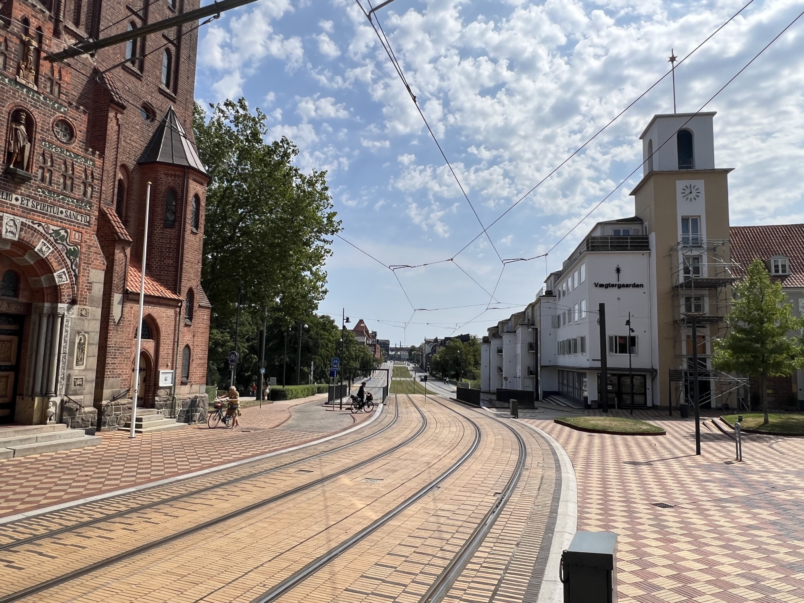
紅磚教堂前的輕軌軌道、自行車指示牌與騎士同時入鏡。單車動線直接接進市中心公共運輸，而不是被留在外圍。
IMG_0440 · 2026.07.30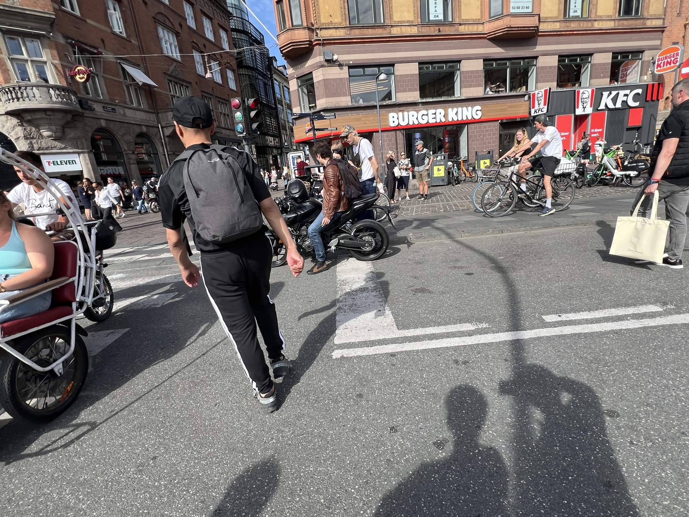
市中心繁忙路口可見獨立的自行車號誌；一般單車、載客三輪車與行人各依自己的動線通過。
IMG_0740 · 2026.07.31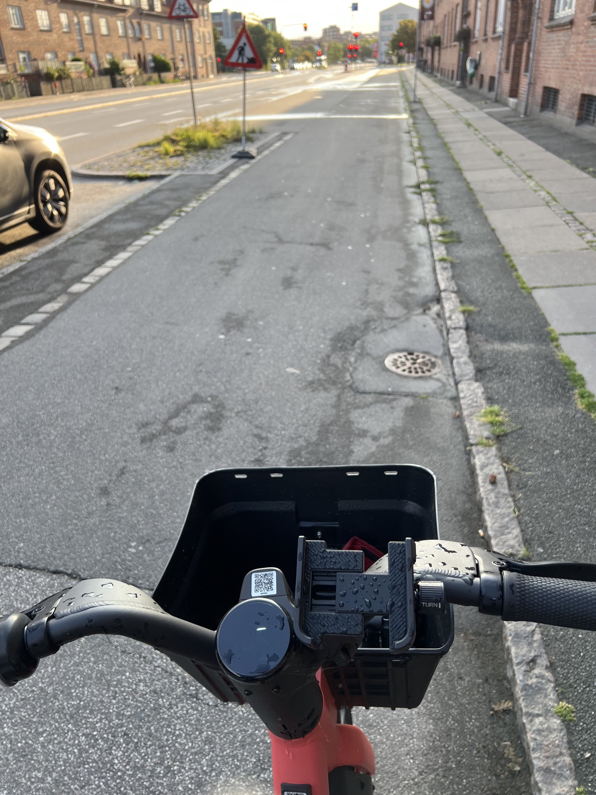
車把上的 Voi QR Code 是租車入口，掃描後依畫面綁定信用卡即可解鎖。出發後直接進入右側路緣分隔的自行車道，租借與道路系統銜接得很直覺。
IMG_0753 · 2026.08.01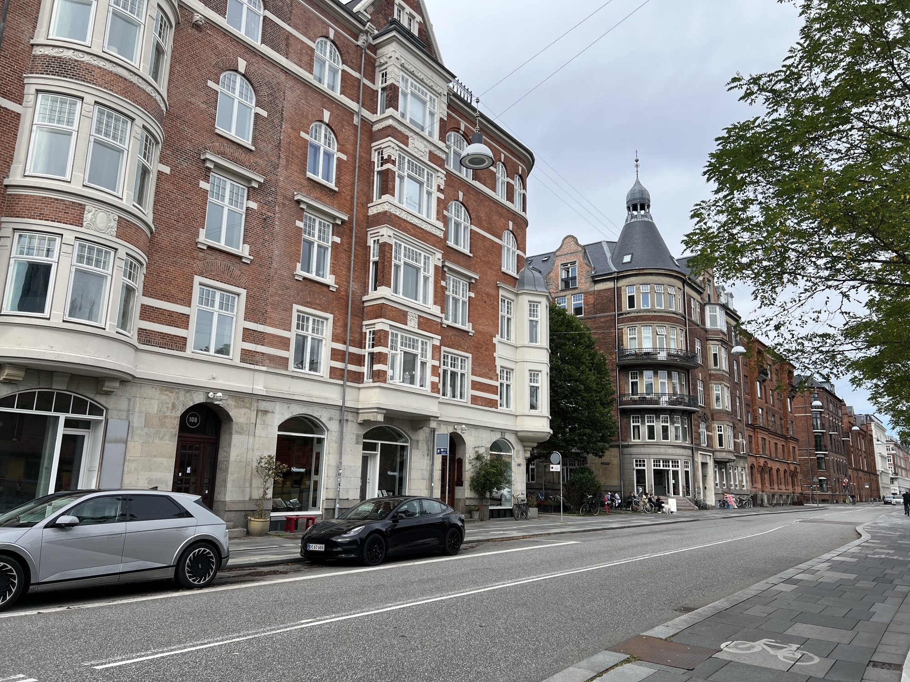
右下角的自行車符號標出專用空間，與車行道及人行道各自分層；單車路網一路延伸到住宅街廓。
IMG_0768 · 2026.08.01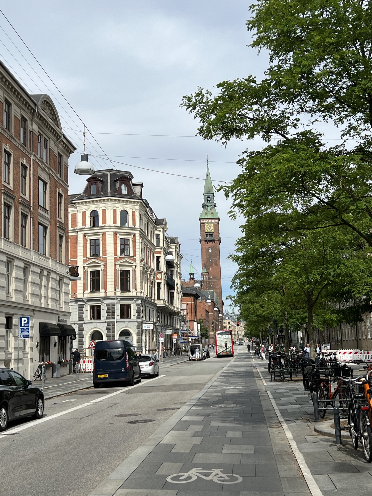
自行車符號、連續鋪面與路旁停車架一路指向市中心。騎乘空間和城市地標在同一條視線上，也反映單車在核心區的日常地位。
IMG_0770 · 2026.08.01Sweden · 瑞典
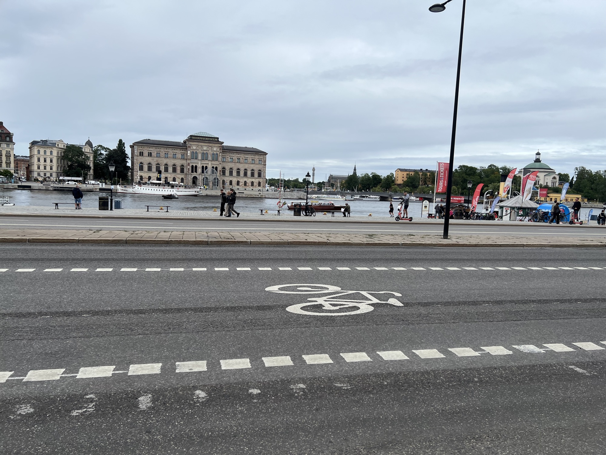
前景大型自行車符號與虛線邊界把騎乘空間直接畫進濱水道路；對岸還可見單車與滑板車停放，串起博物館、碼頭與老城。
IMG_9159 · 2026.07.20Finland · 芬蘭
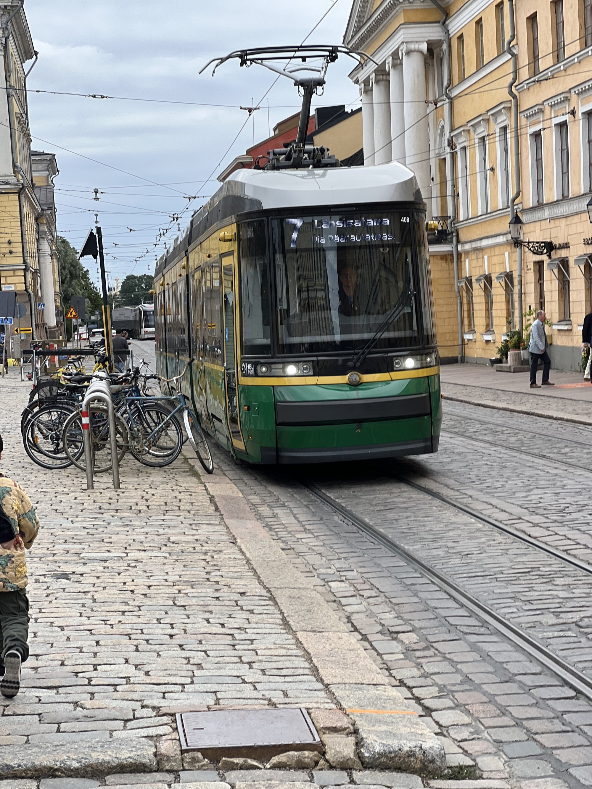
七號電車旁設有成排單車停放架，讓騎乘與軌道運輸在街角完成轉乘；重點不只是能騎，也要有地方好好停。
IMG_9421 · 2026.07.22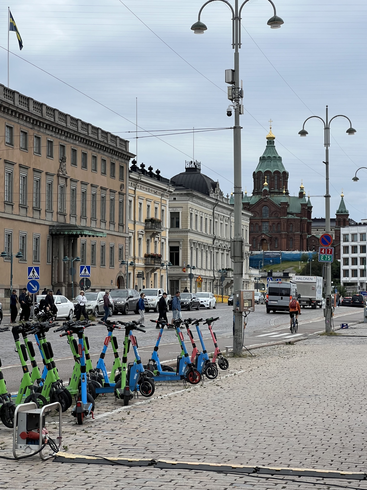
Ryde、Dott 與 Voi 等不同品牌集中在同一處，旁邊仍保留清楚的自行車通行空間；供應多元，但停放秩序同樣重要。
IMG_9422 · 2026.07.22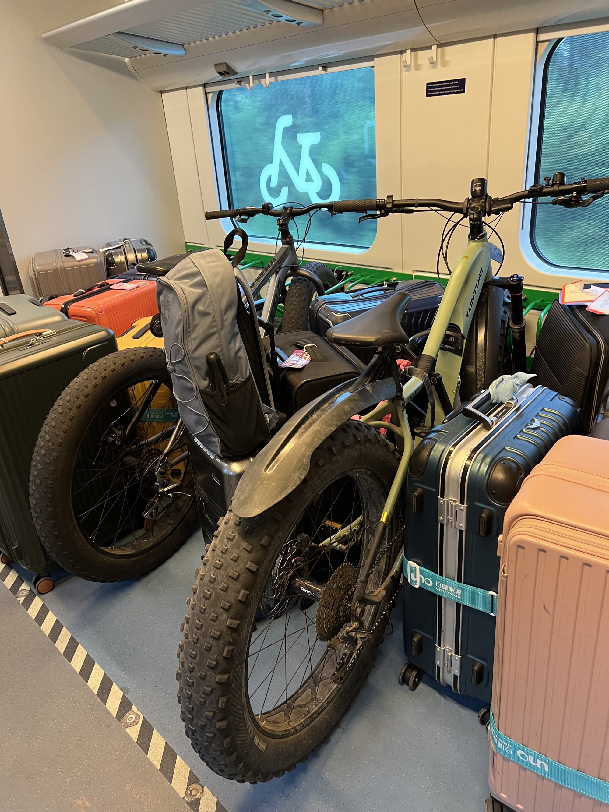
窗上的自行車圖示、固定架與專用區顯示，長途鐵路也把單車視為旅程的一部分；從城市車道可直接延伸成跨城移動。
IMG_9527 · 2026.07.23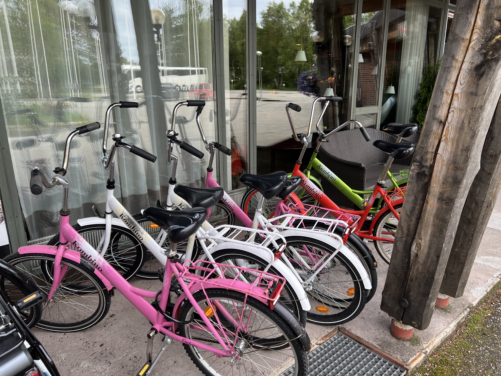
旅宿外整排彩色單車，呈現北部低密度城鎮常見的租借方式：不一定靠大型共享系統，也能從住宿據點開始騎。
IMG_9565 · 2026.07.23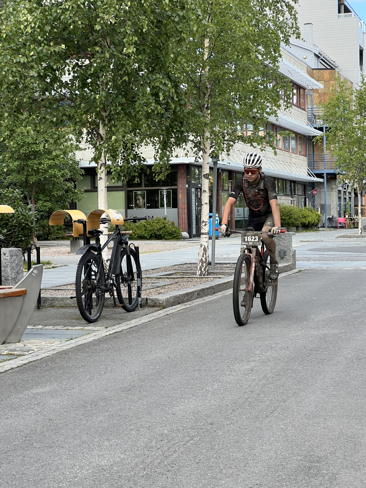
騎士沿著市區街道前進，路旁可見單車停放設施。離開首都後，自行車仍是短程移動與戶外生活的一部分。
IMG_9881 · 2026.07.25照片：旅途實拍 · 2026 年 7–8 月
06 / Takeaway
如果只選一種交通工具，騎自行車最接近哥本哈根的日常。
可以騎得自由，但停得有秩序才是斯德哥爾摩的規則核心。
路權最有彈性，也最考驗使用者主動禮讓行人。
把站點、限速、禁行與停車都變成可被系統管理的城市服務。
租借業者、車輛數量與管制區可能隨季節調整；實際騎乘時請以道路標誌與租借 App 即時資訊為準。